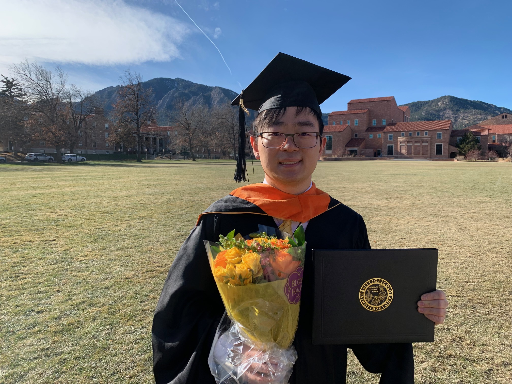

Micah Zhang
ML Research Engineer • Language Models • Adaptive Inference • Efficient Reasoning
I am a ML research engineer working on language models, adaptive inference, and efficient reasoning under real compute constraints. My recent work focuses on improving frozen language models through selective latent refinement and better allocation of test-time computation.

About
I work on methods for making language models more capable, efficient, and practical. I am especially interested in adaptive computation, latent refinement, and evaluation methods that improve reasoning quality without wasting compute.
More broadly, I care about language models as tools that can expand human capability. I want to help build systems that better support learning, reasoning, and decision-making, especially when real-world compute and accessibility constraints matter.
Research Vision
My long-term goal is to contribute to language model research that improves both capability and accessibility. I am particularly interested in systems that become stronger under real compute constraints, and in translating that work into tools that help more people learn, decide, and build.
Research Interests
- Adaptive computation for language models
- Refinement-based inference and controller design
- Test-time compute and reasoning efficiency
- Frozen-model extension and lightweight refinement
- Evaluation of language model quality–compute tradeoffs
Selected Work
Research on improving frozen language models with adaptive extra computation, selective latent refinement, and better quality–compute tradeoffs under real inference constraints.
Manuscript in preparation and not yet publicly available.
This paper introduces FtG-CoT, a few-shot prompting method that combines a fine-tuned BERT encoder, zero-shot chain-of-thought generation, and a fine-tuned GPT-3.5 model for solving BRAINTEASER sentence puzzles.